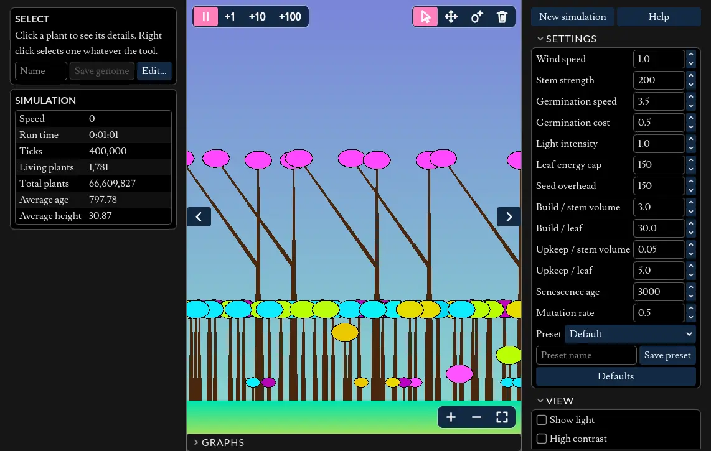

Evolving Plants
The interactive parts of this page require javascript to be enabled.
(There are no ADs or tracking scripts installed on this website!).

The simulation is a download of around 13 MB, and works best with a mouse or trackpad. On a touch screen a tap or drag selects plants (or whatever the left button is set to do), and you can zoom and move around with the buttons, but not yet pinch or pan.
This is one of my earliest interactive projects, or at least, the original version was. It was first written in Java, updated in 2022 to C++ in Qt, and in 2026 moved to Godot so it can run in the browser.
This project is open source and can be found on GitHub
Controls
Mouse and keyboard
Each mouse button does the action chosen for it in the Mouse section: Select plant, Add seed or Remove plants. It acts on a click and all along a drag. By default, left selects and right removes.
| The right button's action | Ctrl/Cmd + click, or hold X |
| The left button's action | Hold Z |
| Pan | Middle drag, Alt/Option + drag, two-finger drag, or WASD / arrow keys |
| Zoom | Mouse wheel, pinch, + and -, or the buttons at the view's top right |
| Fit the world to the view | F, or the button at the view's top right |
| Pause or resume | Space |
| Speed | 1 2 3 for 10, 250 and 1,000 ticks a second, 4 for as fast as possible |
| Hide the side panels | The buttons at the view's top corners |
Looking closer
Select a plant to see its details in the info panel. On narrow screens the panels float over the view, folded away behind the buttons in its top corners.
Download it
It also runs on its own, without a browser. Unzip the file for your system, keeping the two files in it together, then run "EvolvingPlants.exe" on Windows or "EvolvingPlants.x86_64" on Linux.
How it works
The Gist
"Plants" are modelled as lines (stems) and ovals (leaves), the leaves absorb light energy and cast shadows. Over time plants evolve to compete for this light energy by being taller than competitors, or a different colour,
or by having more leaves. The trade-off is that being taller and more complex requires more energy to exist, and a high dense canopy that blocks out all light prevents baby plants from surviving long enough to grow to full
size.
Light
The image shows a new simulation, 60 ticks in, with the light drawn in. The small plants are all different colours, and the coloured columns beneath each leaf are its shadow. The colour of the light represents the energy available at that point. R,G,& B channels each contain their own energy and a leaf may evolve in colour to extract energy from one or more of these
channels. A leaf "blocks" all of the energy it absorbs.
A leaf's colour is the light it reflects; it absorbs the rest. A leaf with the colour 200, 200, 200 in full sunlight (255 in each channel) absorbs 55 from each, 165 in total. A leaf can use up to 150 energy from the light it absorbs.
Beyond that, the excess counts against it, as too much light inhibits photosynthesis in nature, so that leaf gains 150 − 15 = 135. So pale leaves suit plants in full sun, and plants in the shade can afford darker leaves that absorb more.
Early on
Here we can see two groups of plants. This is the same simulation as in the previous image, some 4000 ticks later, and judging by their colour these plants appear to all be descended from just two of the original plants.
Competition
Now that these plants are growing in the same range, they have begun to compete for light, both with members of their own species, but now also with the other species too. Initially we see a simple increase in height, with a few plants breaking above the canopy.
Colour Niches
As there is a cap on how much energy a leaf can extract from the light when photosynthesising, we see different species evolving to take advantage of the light not absorbed by the upper canopy. Here, 150,000 ticks in, a green and orange canopy
grows over a blue and violet understory, with the shadows becoming progressively darker as each species extracts a different subset of the available light. From this point on the upper canopy colour may drift over time via genetic drift and
smaller species will adapt their colours via natural selection to stay different from the taller plants.
Branching
Plants aren't limited to a single stem with a leaf at the top; their genes can also describe branches, each with leaves of their own. Branching rarely evolves from the default starting plants within a reasonable run, so this world
was grown from "TallBunch", tall plants with two leaves each. It is one of the saved genomes you can pick in Genetics, then press Reset simulation to try it.